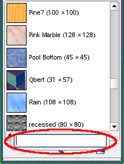

| 2.3. Dialogs and Docking | ||
|---|---|---|

|
2. Main Windows |  |
| 2.3. Dialogs and Docking | ||
|---|---|---|
|
|
2. Main Windows | |
GIMP has great flexibility for arranging dialog on your screen. A “dialog” is a moving window which contains options for a tool or is dedicated to a special task. A “dock” is a container which can hold a collection of persistent dialogs, such as the Tool Options dialog, Brushes dialog, Palette dialog, etc. Docks cannot, however, hold non-persistent dialogs such as the Preferences dialog or an Image window.
GIMP has three default docks:
the Tool Options dock under the Toolbox in the left panel,
the Layers, Channels, Paths and Undo dock in the upper part of the right panel,
the Brushes, Patterns and Gradients dock in the lower part of the right panel.
In these docks, each dialog is in its own tab.
In multi-window mode, the Toolbox is a utility window and not a dock. In single-window mode, it belongs to the single window.
Use → to view a list of dockable dialogs. Select a dockable dialog from the list to view the dialog. If the dialog is available in a dock, then it is made visible. If the dialog is not in a dock, the behavior is different in multi and single window modes:
In multi-window mode, a new window, containing the dialog, appears on the screen.
In single-window mode, the dialog is automatically docked to the Layers-Undo dock as a tab.
You can click-and-drag a tab and drop it in the wanted place:
either in the tab bar of a dock, to integrate it in the dialog group,
or on a docking bar that appears as a blue line when the mouse pointer goes over a dock border, to anchor the dialog to the dock.
In multi-window mode, you can also click on the dialog title and drag it to the wanted place.
Figure 3.7. Integrating a new dialog in a dialog group
Here, in multi-window mode, the Histogram dialog was dragged to the tab bar of the Layers-Undo dock.
More simple: the Add tab command in the Tab menu Section 2.3.2, “Tab Menu”.
Figure 3.8. Anchoring a dialog to a dock border
The Histogram dialog dragged to the left vertical docking bar of the right panel and the result: the dialog anchored to the left border of the right panel. This dialog now belongs to the right panel.
So, you can arrange dialogs in a multi-column display, interesting if you work with two screens, one for dialogs, the other for images.
| Tip | |
|---|---|
|
Press TAB in an Image11,7.1;3.64,7.54;3.34,8.04 8.49,10.1;9.47,10.1;9.47,3.24;8.49,3.24;8.49,10.1 6.57,9.86;7.6,9.86;7.6,3.43;6.57,3.43;6.57,3.97;4.71,3.97;4.71,4.81;6.57,4.81;6.57,9.86 2.7,5;.15,4.86;0,5.64;6.03,5.98;6.03,5.15;3.68,5.05;3.68,3.43;2.7,3.43;2.7,5 1.52,2.94;9.47,2.94;9.47,-1.03;8.49,-1.03;8.49,1.96;1.52,1.96;1.52,2.94 [c252] 3.34,8.04;3.34,8.04;3.34,8.04;2.95,7.48;2.38,6.96;1.62,6.5;.69,6.08;.05,6.82;.05,6.82;.05,6.82;1.16,7.24;2.01,7.79;2.59,8.45;2.89,9.22;2.89,9.96;3.92,9.96;3.92,9.22;3.92,9.22;3.92,9.22;4.06,8.54;4.49,7.97;5.19,7.51;6.18,7.16;5.54,6.43;5.54,6.43;5.54,6.43;4.74,6.73;4.11,7.1;3.64,7.54;3.34,8.04 8.49,10.1;9.47,10.1;9.47,3.24;8.49,3.24;8.49,10.1 6.57,9.86;7.6,9.86;7.6,3.43;6.57,3.43;6.57,3.97;4.71,3.97;4.71,4.81;6.57,4.81;6.57,9.86 2.7,5;.15,4.86;0,5.64;6.03,5.98;6.03,5.15;3.68,5.05;3.68,3.43;2.7,3.43;2.7,5 1.13,2.99;5.2,2.99;5.2,-1.03;4.22,-1.03;4.22,2.06;1.13,2.06;1.13,2.99 5.84,2.99;9.47,2.99;9.47,-1.03;8.49,-1.03;8.49,2.06;5.84,2.06;5.84,2.99 [c253] 3.34,8.04;3.34,8.04;3.34,8.04;2.95,7.48;2.38,6.96;1.62,6.5;.69,6.08;.05,6.82;.05,6.82;.05,6.82;1.16,7.24;2.01,7.79;2.59,8.45;2.89,9.22;2.89,9.96;3.92,9.96;3.92,9.22;3.92,9.22;3.92,9.22;4.06,8.54;4.49,7.97;5.19,7.51;6.18,7.16;5.54,6.43;5.54,6.43;5.54,6.43;4.74,6.73;4.11,7.1;3.64,7.54;3.34,8.04 8.49,10.1;9.47,10.1;9.47,3.24;8.49,3.24;8.49,10.1 6.57,9.86;7.6,9.86;7.6,3.43;6.57,3.43;6.57,3.97;4.71,3.97;4.71,4.81;6.57,4.81;6.57,9.86 2.7,5;.15,4.86;0,5.64;6.03,5.98;6.03,5.15;3.68,5.05;3.68,3.43;2.7,3.43;2.7,5 8.24,.98;8.24,.98;8.24,.98;7.94,.37;7.48,-.17;6.86,-.66;6.08,-1.08;5.44,-.29;5.44,-.29;5.44,-.29;6.36,.17;7.05,.76;7.51,1.49;7.75,2.35;7.75,3.19;8.73,3.19;8.73,2.35;8.73,2.35;8.73,2.35;8.86,1.49;9.25,.77;9.89,.19;10.79,-.25;10.2,-.98;10.2,-.98;10.2,-.98;9.49,-.62;8.93,-.17;8.51,.36;8.24,.98 1.13,3.04;5.35,3.04;5.35,-1.03;4.37,-1.03;4.37,2.16;1.13,2.16;1.13,3.04 [c254] 3.34,7.65;3.34,7.65;3.34,7.65;2.93,6.98;2.35,6.38;1.61,5.85;.69,5.4;.05,6.13;.05,6.13;.05,6.13;1.16,6.64;2.01,7.27;2.59,8.03;2.89,8.93;2.89,9.61;3.92,9.61;3.92,8.93;3.92,8.93;3.92,8.93;4.06,8.16;4.46,7.52;5.14,7;6.08,6.62;5.49,5.84;5.49,5.84;5.49,5.84;4.7,6.19;4.07,6.61;3.62,7.1;3.34,7.65 8.49,10.1;9.47,10.1;9.47,1.37;8.49,1.37;8.49,10.1 6.57,9.86;7.6,9.86;7.6,1.81;6.57,1.81;6.57,3.04;4.71,3.04;4.71,3.87;6.57,3.87;6.57,9.86 2.65,4.22;.15,4.07;0,4.9;6.03,5.25;6.03,4.46;3.63,4.32;3.63,2.35;2.65,2.35;2.65,4.22 1.77,2.6;2.75,2.6;2.75,.15;9.71,.15;9.71,-.78;1.77,-.78;1.77,2.6 [c255] 3.34,8.04;3.34,8.04;3.34,8.04;2.95,7.48;2.38,6.96;1.62,6.5;.69,6.08;.05,6.82;.05,6.82;.05,6.82;1.16,7.24;2.01,7.79;2.59,8.45;2.89,9.22;2.89,9.96;3.92,9.96;3.92,9.22;3.92,9.22;3.92,9.22;4.06,8.54;4.49,7.97;5.19,7.51;6.18,7.16;5.54,6.43;5.54,6.43;5.54,6.43;4.74,6.73;4.11,7.1;3.64,7.54;3.34,8.04 8.49,10.1;9.47,10.1;9.47,3.24;8.49,3.24;8.49,10.1 6.57,9.86;7.6,9.86;7.6,3.43;6.57,3.43;6.57,3.97;4.71,3.97;4.71,4.81;6.57,4.81;6.57,9.86 2.7,5;.15,4.86;0,5.64;6.03,5.98;6.03,5.15;3.68,5.05;3.68,3.43;2.7,3.43;2.7,5 1.08,2.99;2.06,2.99;2.06,0;2.06,0;2.06,0;2.75,.04;3.43,.16;4.12,.36;4.81,.64;4.95,-.15;4.95,-.15;4.95,-.15;4.07,-.45;3.13,-.67;2.13,-.82;1.08,-.88;1.08,2.99 9.76,2.89;9.76,1.96;7.85,1.96;7.85,1.96;7.85,1.96;8.04,1.19;8.53,.55;9.32,.04;10.4,-.34;9.76,-1.13;9.76,-1.13;9.76,-1.13;8.91,-.75;8.24,-.31;7.74,.21;7.41,.78;7.41,.78;7.41,.78;7.08,.25;6.61,-.25;5.98,-.69;5.2,-1.08;4.61,-.34;4.61,-.34;4.61,-.34;5.49,.06;6.17,.58;6.64,1.21;6.92,1.96;5,1.96;5,2.89;9.76,2.89 [c256] 3.34,8.04;3.34,8.04;3.34,8.04;2.93,7.46;2.35,6.93;1.61,6.45;.69,6.03;.05,6.77;.05,6.77;.05,6.77;1.16,7.17;2.01,7.69;2.59,8.32;2.89,9.07;2.89,9.81;3.92,9.81;3.92,9.07;3.92,9.07;3.92,9.07;4.06,8.44;4.49,7.91;5.19,7.48;6.18,7.16;5.54,6.43;5.54,6.43;5.54,6.43;4.74,6.71;4.11,7.07;3.64,7.52;3.34,8.04 8.49,10.1;9.47,10.1;9.47,3.38;8.49,3.38;8.49,10.1 6.57,9.86;7.6,9.86;7.6,3.38;6.57,3.38;6.57,4.02;4.71,4.02;4.71,4.81;6.57,4.81;6.57,9.86 2.65,5.05;.15,4.9;0,5.74;6.03,6.08;6.03,5.3;3.63,5.15;3.63,3.38;2.65,3.38;2.65,5.05 8.93,3.58;8.93,2.8;6.08,2.8;6.08,3.58;8.93,3.58 1.28,3.19;2.26,3.19;2.26,0;2.26,0;2.26,0;2.94,.02;3.63,.07;4.32,.17;5,.29;5.15,-.49;5.15,-.49;5.15,-.49;4.26,-.66;3.32,-.78;2.33,-.86;1.28,-.88;1.28,3.19 10.2,2.45;10.2,1.62;4.81,1.62;4.81,2.45;10.2,2.45 7.5,-1.23;7.5,-1.23;7.5,-1.23;7.02,-1.2;6.59,-1.13;6.22,-1.01;5.91,-.83;5.91,-.83;5.91,-.83;5.66,-.63;5.49,-.4;5.38,-.16;5.35,.1;5.35,.1;5.35,.1;5.38,.38;5.49,.64;5.66,.87;5.91,1.08;5.91,1.08;5.91,1.08;6.22,1.25;6.59,1.37;7.02,1.45;7.5,1.47;7.5,1.47;7.5,1.47;7.99,1.45;8.42,1.37;8.79,1.25;9.1,1.08;9.1,1.08;9.1,1.08;9.34,.87;9.52,.64;9.63,.38;9.66,.1;9.66,.1;9.66,.1;9.63,-.16;9.52,-.4;9.34,-.63;9.1,-.83;9.1,-.83;9.1,-.83;8.79,-1.01;8.42,-1.13;7.99,-1.2;7.5,-1.23 7.5,.64;7.5,.64;7.5,.64;7.23,.63;6.98,.61;6.77,.57;6.6,.51;6.6,.51;6.6,.51;6.46,.44;6.36,.35;6.3,.23;6.28,.1;6.28,.1;6.28,.1;6.3,-.02;6.36,-.12;6.46,-.2;6.6,-.27;6.6,-.27;6.6,-.27;6.77,-.32;6.98,-.36;7.23,-.38;7.5,-.39;7.5,-.39;7.5,-.39;7.78,-.38;8.03,-.36;8.24,-.32;8.41,-.27;8.41,-.27;8.41,-.27;8.55,-.2;8.65,-.12;8.71,-.02;8.73,.1;8.73,.1;8.73,.1;8.71,.23;8.65,.35;8.55,.44;8.41,.51;8.41,.51;8.41,.51;8.24,.57;8.03,.61;7.78,.63;7.5,.64 [c257] 3.34,8.04;3.34,8.04;3.34,8.04;2.95,7.48;2.38,6.96;1.62,6.5;.69,6.08;.05,6.82;.05,6.82;.05,6.82;1.16,7.24;2.01,7.79;2.59,8.45;2.89,9.22;2.89,9.96;3.92,9.96;3.92,9.22;3.92,9.22;3.92,9.22;4.06,8.54;4.49,7.97;5.19,7.51;6.18,7.16;5.54,6.43;5.54,6.43;5.54,6.43;4.74,6.73;4.11,7.1;3.64,7.54;3.34,8.04 8.49,10.1;9.47,10.1;9.47,3.24;8.49,3.24;8.49,10.1 6.57,9.86;7.6,9.86;7.6,3.43;6.57,3.43;6.57,3.97;4.71,3.97;4.71,4.81;6.57,4.81;6.57,9.86 2.7,5;.15,4.86;0,5.64;6.03,5.98;6.03,5.15;3.68,5.05;3.68,3.43;2.7,3.43;2.7,5 9.47,2.94;9.47,2.01;2.7,2.01;2.7,.1;9.71,.1;9.71,-.83;1.72,-.83;1.72,2.94;9.47,2.94 [c258] 3.34,8.04;3.34,8.04;3.34,8.04;2.93,7.46;2.35,6.93;1.61,6.45;.69,6.03;.05,6.77;.05,6.77;.05,6.77;1.16,7.17;2.01,7.69;2.59,8.32;2.89,9.07;2.89,9.81;3.92,9.81;3.92,9.07;3.92,9.07;3.92,9.07;4.06,8.44;4.49,7.91;5.19,7.48;6.18,7.16;5.54,6.43;5.54,6.43;5.54,6.43;4.74,6.71;4.11,7.07;3.64,7.52;3.34,8.04 8.49,10.1;9.47,10.1;9.47,3.38;8.49,3.38;8.49,10.1 6.57,9.86;7.6,9.86;7.6,3.38;6.57,3.38;6.57,4.02;4.71,4.02;4.71,4.81;6.57,4.81;6.57,9.86 2.65,5.05;.15,4.9;0,5.74;6.03,6.08;6.03,5.3;3.63,5.15;3.63,3.38;2.65,3.38;2.65,5.05 1.72,3.24;9.47,3.24;9.47,.74;2.65,.74;2.65,0;9.71,0;9.71,-.93;1.67,-.93;1.67,1.67;8.49,1.67;8.49,2.31;1.72,2.31;1.72,3.24 [c259] 3.34,8.04;3.34,8.04;3.34,8.04;2.93,7.46;2.35,6.93;1.61,6.45;.69,6.03;.05,6.77;.05,6.77;.05,6.77;1.16,7.17;2.01,7.69;2.59,8.32;2.89,9.07;2.89,9.81;3.92,9.81;3.92,9.07;3.92,9.07;3.92,9.07;4.06,8.44;4.49,7.91;5.19,7.48;6.18,7.16;5.54,6.43;5.54,6.43;5.54,6.43;4.74,6.71;4.11,7.07;3.64,7.52;3.34,8.04 8.49,10.1;9.47,10.1;9.47,3.38;8.49,3.38;8.49,10.1 6.57,9.86;7.6,9.86;7.6,3.38;6.57,3.38;6.57,4.02;4.71,4.02;4.71,4.81;6.57,4.81;6.57,9.86 2.65,5.05;.15,4.9;0,5.74;6.03,6.08;6.03,5.3;3.63,5.15;3.63,3.38;2.65,3.38;2.65,5.05 5.84,3.14;9.47,3.14;9.47,-1.03;8.49,-1.03;8.49,2.26;5.84,2.26;5.84,3.14 1.28,3.14;5.35,3.14;5.35,.83;2.21,.83;2.21,0;2.21,0;2.21,0;3.11,.02;4.03,.07;4.99,.17;5.98,.29;6.13,-.54;6.13,-.54;6.13,-.54;4.94,-.67;3.74,-.78;2.52,-.87;1.28,-.93;1.28,1.77;4.37,1.77;4.37,2.26;1.28,2.26;1.28,3.14 [c25a] 3.34,8.04;3.34,8.04;3.34,8.04;2.93,7.46;2.35,6.93;1.61,6.45;.69,6.03;.05,6.77;.05,6.77;.05,6.77;1.16,7.17;2.01,7.69;2.59,8.32;2.89,9.07;2.89,9.81;3.92,9.81;3.92,9.07;3.92,9.07;3.92,9.07;4.06,8.44;4.49,7.91;5.19,7.48;6.18,7.16;5.54,6.43;5.54,6.43;5.54,6.43;4.74,6.71;4.11,7.07;3.64,7.52;3.34,8.04 8.49,10.1;9.47,10.1;9.47,3.38;8.49,3.38;8.49,10.1 6.57,9.86;7.6,9.86;7.6,3.38;6.57,3.38;6.57,4.02;4.71,4.02;4.71,4.81;6.57,4.81;6.57,9.86 2.65,5.05;.15,4.9;0,5.74;6.03,6.08;6.03,5.3;3.63,5.15;3.63,3.38;2.65,3.38;2.65,5.05 9.47,3.09;9.47,-.83;8.49,-.83;8.49,-.64;6.57,-.64;6.57,-.83;5.59,-.83;5.59,3.09;9.47,3.09 6.57,.25;8.49,.25;8.49,2.26;6.57,2.26;6.57,.25 1.13,3.09;4.95,3.09;4.95,.83;2.06,.83;2.06,-.1;2.06,-.1;2.06,-.1;2.83,-.08;3.63,-.01;4.45,.1;5.3,.25;5.49,-.54;5.49,-.54;5.49,-.54;4.41,-.69;3.31,-.81;2.2,-.89;1.08,-.93;1.08,1.67;3.97,1.67;3.97,2.26;1.13,2.26;1.13,3.09 [c25b] 3.34,8.04;3.34,8.04;3.34,8.04;2.93,7.46;2.35,6.93;1.61, Use an icon to represent the dialog type. Is only available for dialogs that allows you to select something, such as a brush, pattern, gradient, etc. Current Status shows a representation of the currently selected item in the tab top. Use text to display the dialog type. Using both an icon and text results in wider tabs. Show the currently selected item and text with the dialog type.
These entries are shown in dialogs that allow you to select an item from a set: brushes, patterns, fonts, etc. You can choose to view the items as a vertical list, with the name of each beside it, or as a grid, with representations of the items but no names. Each has its advantages: viewing as a list gives you more information, but viewing as a grid allows you to see more possibilities at once. The default for this varies across dialogs: for brushes and patterns, the default is a grid; for most other things, the default is a list. When the tree-view is View as List, you can use tags. Please see Section 3.6, “Tagging”. You can also use a list search field: Figure 3.14. The list search field.

Use Ctrl+F to open the list search field. An item must be selected for this command to be effective.
The list search field automatically closes after five seconds if you do nothing. |